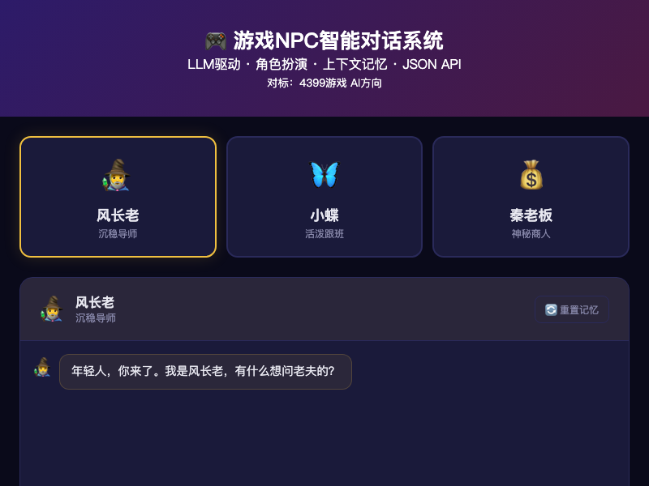
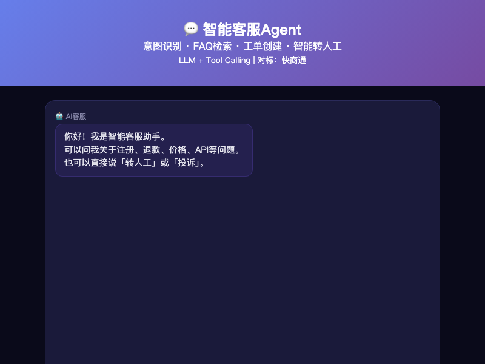
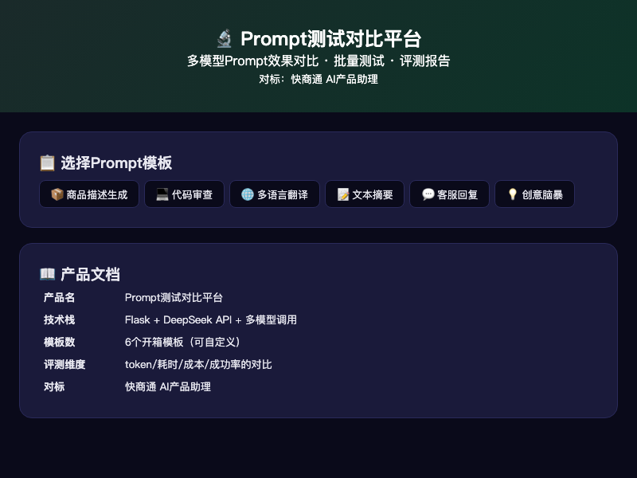

AI 产品设计
围绕 RAG、Agent、Prompt、AIGC 工作流设计产品形态，明确用户场景、功能边界、评估指标和迭代路径。
RAG / Agent / Prompt / AIGC
把金融业务经验，做成可运行的 AI 产品。
金融硕士背景，证券业务一线经验，长期搭建 Agent、RAG、AIGC 与自动化 Demo。擅长把复杂业务拆解为产品原型、流程系统和可交付的 MVP。
这不是静态 PDF，而是一个可以展示产品思考、项目结果和 Demo 能力的个人主页。
我关注金融场景中的 AI 产品机会：信贷风控、研究报告生成、客户服务、知识库问答、运营自动化和内容生产。
相比只写“会使用 AI 工具”，我更倾向于把想法做成可点击、可演示、可解释的产品原型，让招聘方直接看到业务理解、产品判断和工程落地能力。
面向 AI 产品经理岗位，重点展示从业务抽象到原型交付的完整链路。
围绕 RAG、Agent、Prompt、AIGC 工作流设计产品形态，明确用户场景、功能边界、评估指标和迭代路径。
具备证券、投顾、零售与机构支持经验，能把金融业务中的合规、风控、运营和客户服务问题转化为 AI 场景。
能够用 Python、Flask、Gradio、API 与数据工具快速搭建可演示 MVP，让需求验证不只停在文档层面。
基于 OpenClaw 框架搭建多 Agent 协作系统，设计并运维 8 个 AI Agent；沉淀 20+ 个可复用技能模块，覆盖公众号内容生产、金融数据分析、飞书日报自动化和行业研究报告生成。
为高净值客户提供投资咨询与资产配置服务，跟踪市场动态并维护核心客户关系，积累金融客户需求理解与合规沟通经验。
支持机构客户拓展、零售业务咨询、运营分析报告与行政流程优化，形成从前台客户到后台运营的综合业务视角。
分析支付数据并支持商户关系管理，参与跨境支付场景下的合规、风控和客户服务工作。
每个 Demo 都对应一个明确业务场景，保留完整详情页，可从网页直接进入体验。

输入产品描述后生成白底图、场景图、细节图、尺寸图等电商素材，提升跨境电商上新效率。
查看详情
上传文档后自动解析、切分、建立向量索引，支持自然语言问答与来源引用。
查看详情
LLM 驱动 NPC 对话，支持角色设定、上下文记忆、情绪状态和 JSON API。
查看详情
内置零售、餐饮、物业 SOP 模板，根据巡检数据自动评分并生成图文报告。
查看详情
基于 LLM 与 Tool Calling 的客服机器人，覆盖意图识别、FAQ 检索、工单创建和转人工。
查看详情
支持多模型并行评测，自动记录 token、耗时、成本并生成 Prompt 优化报告。
查看详情面向信贷审批与风险分析，覆盖贷前审核、风控指标监控、财报风险扫描和可解释审批建议。
查看详情Prompt Engineering、RAG、Agent 编排、AIGC 工作流。
Python、Flask、Gradio、API、SQL、数据处理。
需求分析、PRD、用户流程、竞品分析、指标设计。
证券业务、信贷风控、客户服务、行业研究与合规沟通。
如果你正在寻找一个既懂金融业务、又能把 AI 想法做成可运行 Demo 的产品候选人，我们可以聊聊。